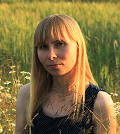

ALENA REBKAVETS
Contact Info:
- +48-730-667-217, +375 (44) 773-16-62
- archirebkavets@gmail.com
- Wroclaw

| Summary |
|---|
| I am hard-working and responsible person. I can deal with difficult situations. I'm interested in learning how to create web-sites and web applications. I'm interested in this because it’s innovatively. |
| Skills |
|
- HTML; - CSS; - JavaScript; - Figma; - Adobe Photoshop; - Webpack; - Git; - Sass; - Autodesk 3ds Max; - Corona Renderer; - Marvelous designer; - Autodesk Revit; - Autodesk Autocad. |
| Education |
|
Belarusian National Technical University, Specialty: Architecture, Qualification: Architect, 2007. The Rolling Scopes School RS 2020 Q1 (JavaScript) |
| English skills |
| I try to improve my speaking skills, listenning and grammar every day. |
| About myself |
| I am fond of photography, long-distance running (record - 21.097 km at the Minsk half marathon 2019), cycling. |